👤 About this journey
Alex — Alex is a race director preparing for a trail running event with 15 runners and 3 checkpoints. Alex sets up the race the day before, then on race morning opens the app to confirm everything is in order before handing devices to the volunteer teams.
Open the App
home page module cards are all accessible when no operation is active
When the app is idle on the home screen and no operation is in progress, all three module cards — Checkpoint Operations, Base Station, and Race Maintenance — should be enabled and ready to tap. This test confirms none of them are accidentally disabled.
Home page — all module cards visible and enabled
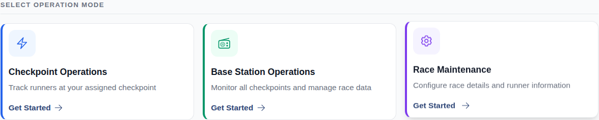
Configure Settings
opens and closes the Settings modal
Tapping the settings cog in the top-right corner should open the settings panel. Pressing the Escape key (or tapping close) should dismiss it cleanly. This test confirms both actions work.
Home — tap Settings cog button (aria-label Settings)

Settings modal — panel open with customisation options

Settings modal — closed after pressing X button
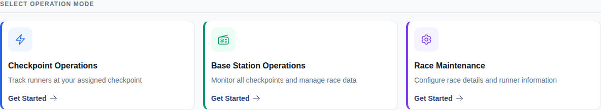
toggles dark mode on and off
The dark mode toggle in settings switches the app between a light colour scheme and a dark one. This test turns dark mode on, confirms the dark theme is applied, then turns it back off and confirms the light theme is restored.
Home — open Settings modal
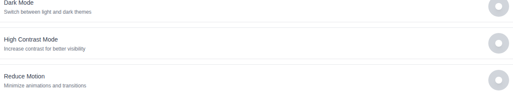
Settings modal — locate Dark Mode toggle switch

Dark mode ON — html element gains "dark" class

Dark mode OFF — "dark" class removed from html element
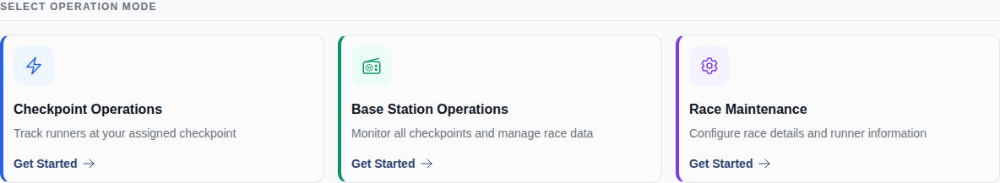
settings persist after closing and reopening the modal
Changes made in settings should be saved and remembered. If dark mode is turned on and the settings panel is closed then reopened, dark mode should still be on — the preference should not reset.
Home — open Settings modal

Settings modal — enable dark mode and save
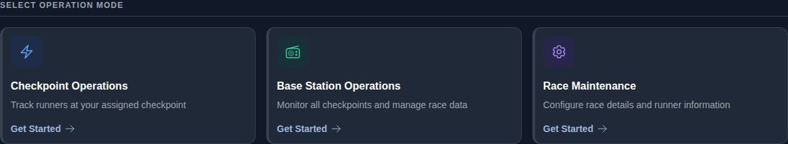
Home — reopen Settings modal
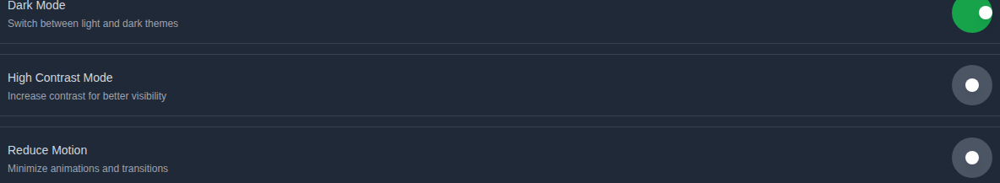
Settings modal — dark mode toggle persists as checked
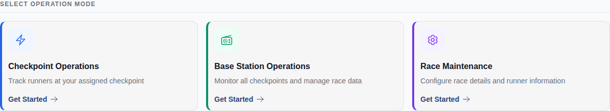
Create a Race
⚠ Screenshot data not found for test: "creates a new race from scratch and verifies the overview" — run make test-e2e first.
step indicator advances correctly through setup wizard
The race creation wizard has four steps: Template, Race Details, Runner Setup, and Waves. This test checks that the progress indicator at the top updates as you advance through each step, so the race director always knows where they are in the setup process.
Step 1 of 4 — Template: setup wizard opens
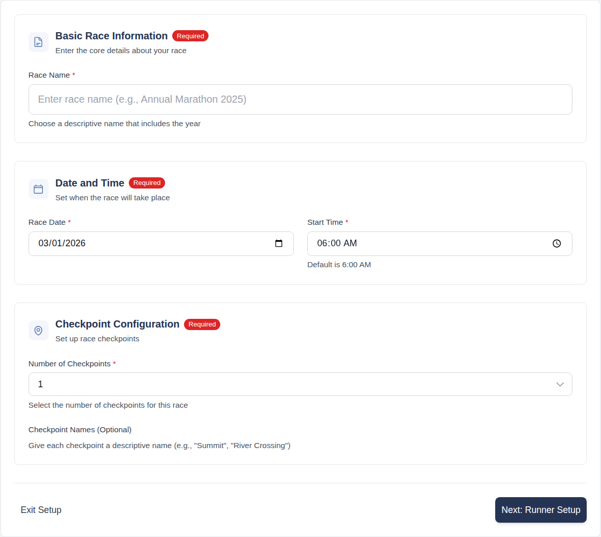
Step 2 of 4 — Race Details: step indicator shows step 2
Step 3 of 4 — Runner Setup: step indicator advances to step 3
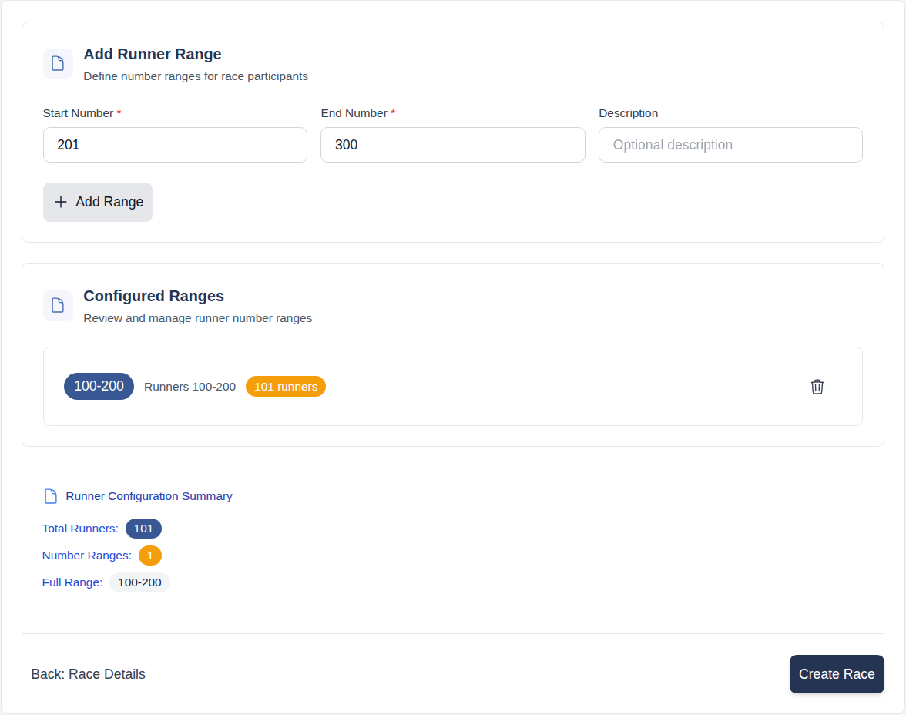
back button on step 2 returns to race details with data preserved
If a race director fills in the race name and other details on Step 2 of 4 (Race Details), moves on to Step 3 of 4 (Runner Setup), then clicks Back, all their work should still be there — the race name and other fields must not be wiped out. Nobody should have to retype information just because they went back a step.
Step 1 of 4 — Template: choose Start from Scratch

Step 2 of 4 — Race Details: fill in race name and details
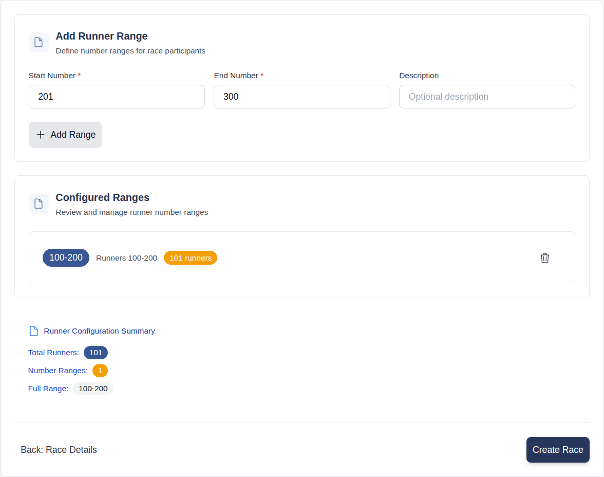
Step 3 of 4 — Runner Setup: navigate forward then press Back

Step 2 of 4 — Race Details: data preserved after Back
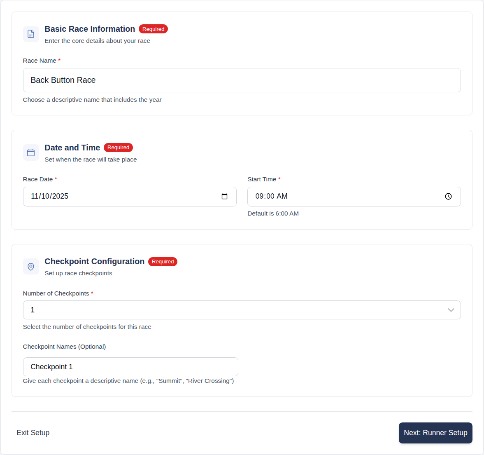
Manage Races
race management page lists created races
The Race Management page is the race director's central hub where all races are listed. This test confirms that a race created earlier in the test suite appears on that page.
Race Management — page lists all created races

clicking a race opens its overview
When the race director clicks on a race in the management list, they should be taken to that race's overview page where they can see all the details. This test confirms that navigation works correctly.
Race Management — page with race listed
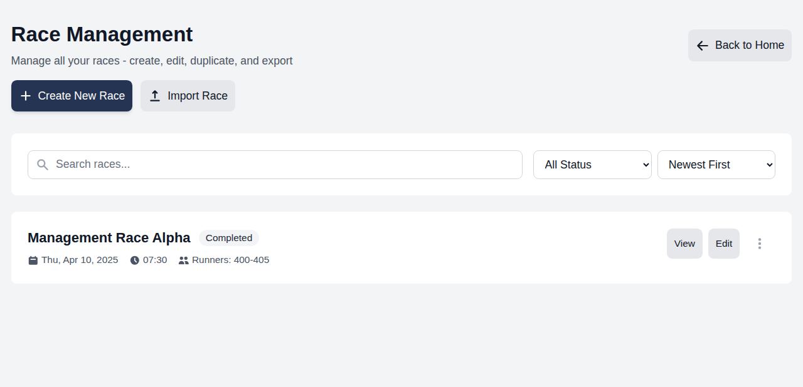
Race card — click race name to open overview
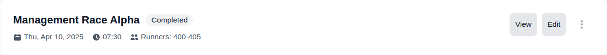
Race overview — name and details visible

⚠ Screenshot data not found for test: "creates a second race from the management page" — run make test-e2e first.
⚠ Screenshot data not found for test: "race overview shows correct runner and checkpoint counts" — run make test-e2e first.
Launch Checkpoint & Base Station Modules
navigates from race overview to a checkpoint
From the race overview, a race director can jump straight to any checkpoint's live mark-off screen. This test clicks the Checkpoint 1 link and confirms the checkpoint mark-off screen opens.
Checkpoint view — mark-off screen for CP1 open
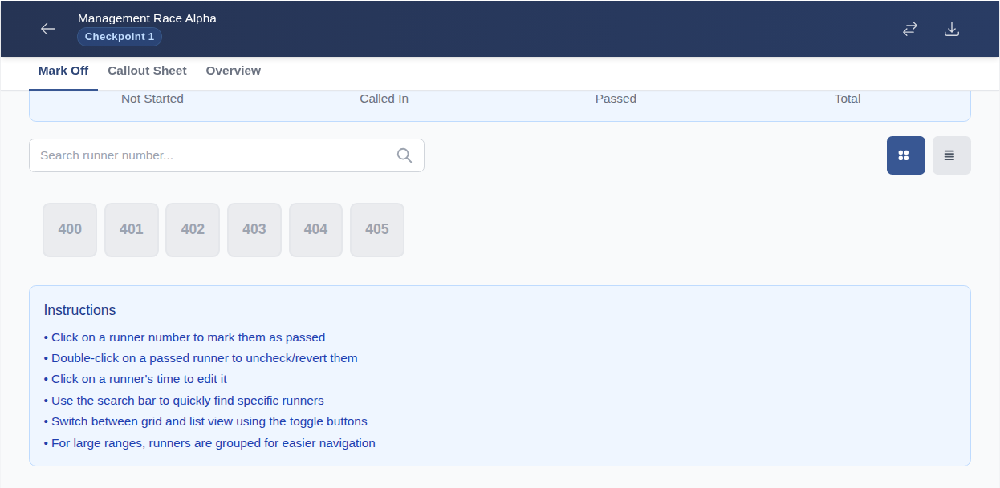
navigates from race overview to base station
From the race overview, a race director can jump straight to the base station. This test clicks the Base Station button on the overview page and confirms the base station operations screen opens.
Navigate directly to base station operations
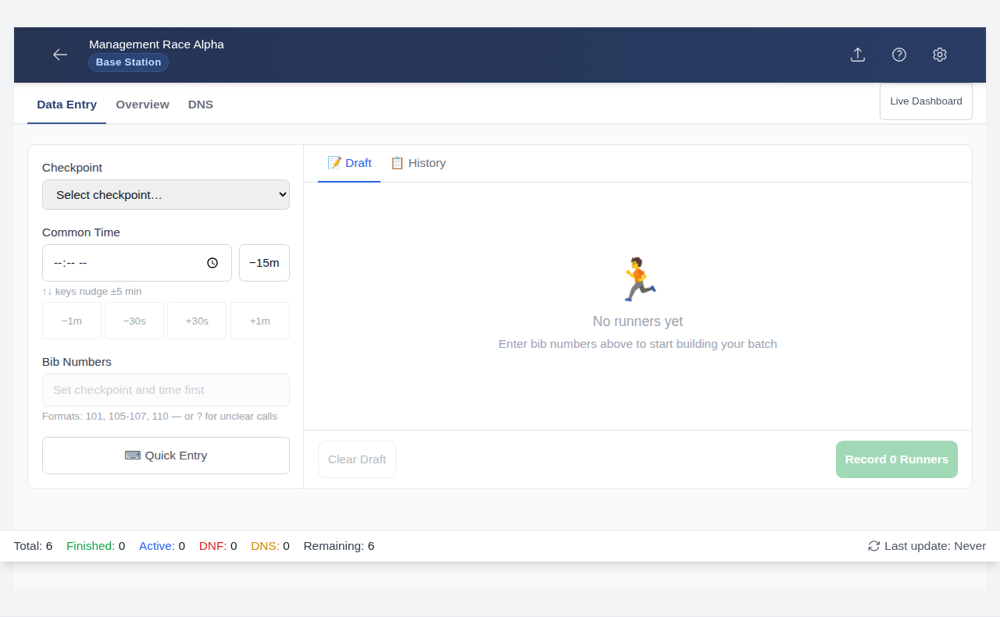
Base Station — operations screen open
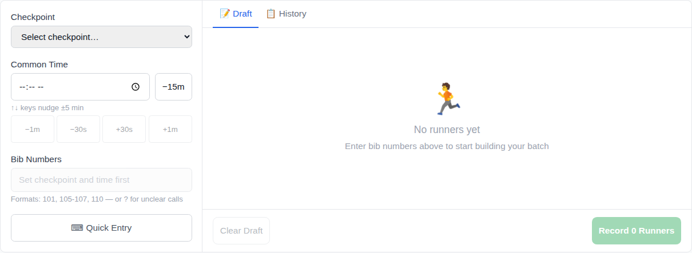